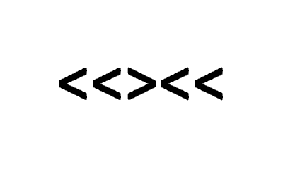

<!DOCTYPE html>
<html>
    <head>
        <title>Flanker Task</title>
        <script src="https://ajax.googleapis.com/ajax/libs/jquery/1.11.1/jquery.min.js"></script>  
        <script src="../jspsych.js"></script>
        <script src="../plugins/jspsych-html-keyboard-response.js"></script>
        <script src="../plugins/jspsych-image-keyboard-response.js"></script>
        <script src="../plugins/jspsych-fullscreen.js"></script>

        <link rel="stylesheet" href="../css/jspsych.css"></link>
        <meta http-equiv="Content-Type" content="text/html; charset=UTF-8" />

        <style>
            p {font-size: 26px;}
        </style>

    </head>
    <body bgcolor="#d6eaf8">
    </body>
    <script>

        /* fullscreen_mode */
        var fullscreen_start = {
            type: 'fullscreen',
            fullscreen_mode: true
        };

        var fullscreen_exit = {
           type: 'fullscreen',
           fullscreen_mode: false
        };

        /* experiment parameters */
        var reps_per_trial_type = 1;

        /*set up welcome block*/
        var welcome = {
          type: "html-keyboard-response",
          stimulus: '<p>실험을 시작하겠습니다. 아무 키나 눌러 시작하십시오.</p>'
        };

        /*set up instructions block*/
        var instructions = {
          type: "html-keyboard-response",
          stimulus: "<p>화면에 5개의 화살표가 나타납니다. 아래의 예를 보세요.</p>"+
            "</img>"+
            "<p>만약 가운데 화살표가 왼쪽을 가리키면(<), <strong>왼쪽 방향키</strong>를 누르세요.</p>"+
            "<p>만약 가운데 화살표가 오른쪽을 가리키면(>), <strong>오른쪽 방향키</strong>를 누르세요.</p>"+
            "<p>아무 키나 눌러 시작하십시오.</p>",
          post_trial_gap: 1000
        };

        /*defining stimuli*/
        var test_stimuli = [
          {
            stimulus: "img/con1.png",
            data: { stim_type: 'congruent', direction: 'left'}
          },
          {
            stimulus: "img/con2.png",
            data: { stim_type: 'congruent', direction: 'right'}
          },
          {
            stimulus: "img/inc1.png",
            data: { stim_type: 'incongruent', direction: 'right'}
          },
          {
            stimulus: "img/inc2.png",
            data: { stim_type: 'incongruent', direction: 'left'}
          }
        ];

        /* defining test timeline */
        var test = {
          timeline: [{
            type: 'image-keyboard-response',
            choices: [37, 39],
            trial_duration: 1500,
            stimulus: jsPsych.timelineVariable('stimulus'),
            data: jsPsych.timelineVariable('data'),
            on_finish: function(data){
              var correct = false;
              if(data.direction == 'left' &&  data.key_press == 37 && data.rt > -1){
                correct = true;
              } else if(data.direction == 'right' && data.key_press == 39 && data.rt > -1){
                correct = true;
              }
              data.correct = correct;
            },
            post_trial_gap: function() {
                return Math.floor(Math.random() * 1500) + 500;
            }
          }],
          timeline_variables: test_stimuli,
          sample: {type: 'fixed-repetitions', size: reps_per_trial_type}
        };

        /*defining debriefing block*/
        var debrief = {
          type: "html-keyboard-response",
          stimulus: function() {
            var total_trials = jsPsych.data.get().filter({trial_type: 'image-keyboard-response'}).count();
            var accuracy = Math.round(jsPsych.data.get().filter({correct: true}).count() / total_trials * 100);
            var congruent_rt = Math.round(jsPsych.data.get().filter({correct: true, stim_type: 'congruent'}).select('rt').mean());
            var incongruent_rt = Math.round(jsPsych.data.get().filter({correct: true, stim_type: 'incongruent'}).select('rt').mean());
            return "<p>정답율은 <strong>"+ accuracy +"%</strong> 입니다.</p>" +
            "<p>일치 조건의 평균 반응시간은 <strong>" + congruent_rt + "ms</strong> 입니다.</p>" +
            "<p>불일치 조건의 평균 반응시간은 <strong>" + incongruent_rt + "ms</strong> 입니다.</p>" +
            "<p>아무 키나 누르면 실험이 종료됩니다. 감사합니다!</p>";
          }
        };

        /*set up experiment structure*/
        var timeline = [];
        //timeline.push(fullscreen_start);
        timeline.push(welcome);
        timeline.push(instructions);
        timeline.push(test);
        timeline.push(debrief);
        //timeline.push(fullscreen_exit);


        /*start experiment*/
        jsPsych.init({
            timeline: timeline,
            on_finish: function() {
                jsPsych.data.displayData('csv'); 
                jsPsych.data.get().localSave('flanker.csv', 'csv');
                saveData("flanker.csv", jsPsych.data.get().csv());
            }
        });
        
        function saveData(filename, filedata){
           $.ajax({
              type:'post',
              cache: false,
              url: 'localhost://save_data.php', // this is the path to the above PHP script
              data: {filename: filename, filedata: filedata}
        });
}
    </script>
</html>
